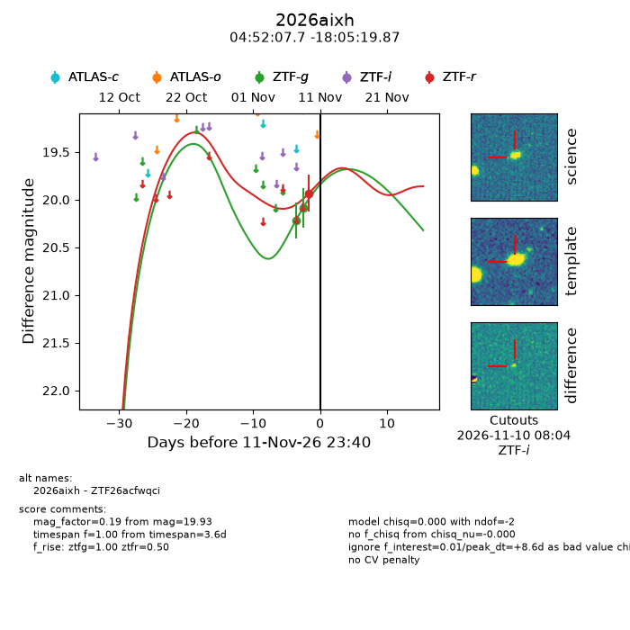
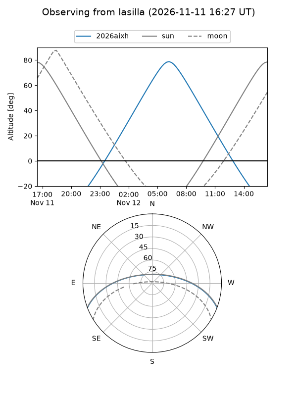
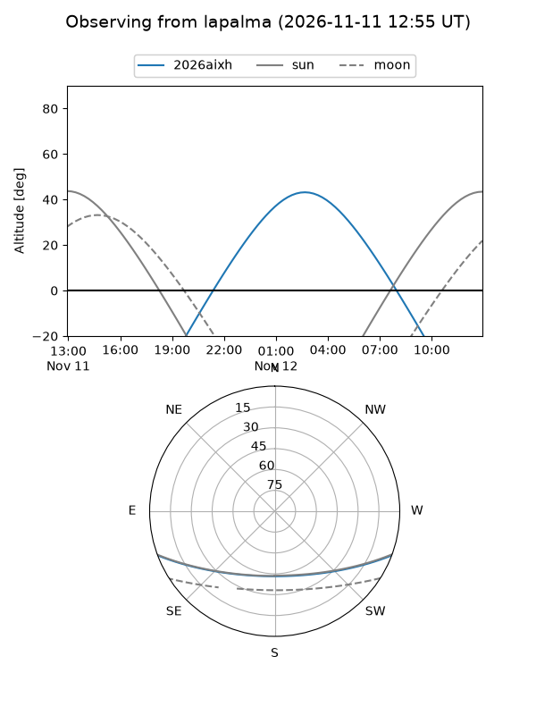
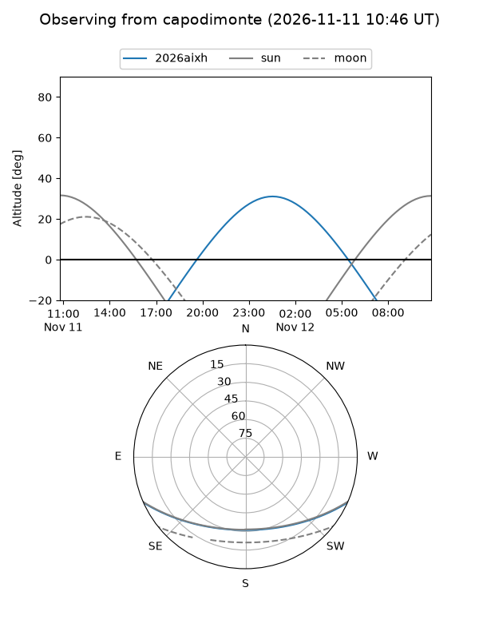
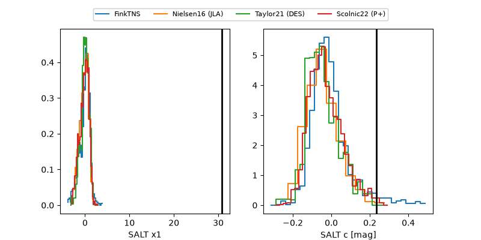

2026aixh
Target 2026aixh at 2026-11-11 23:42
Aliases and brokers:
FINK-ZTF: ztf.fink-portal.org/ZTF26acfwqci
Lasair-ZTF: lasair-ztf.lsst.ac.uk/objects/ZTF26acfwqci
ALeRCE-ZTF: alerce.online/object/ZTF26acfwqci
YSE-PZ: ziggy.ucolick.org/yse/transient_detail/2026aixh
TNS name: wis-tns.org/object/2026aixh
Direct TNS query: direct search
alt names
ZTF26acfwqci (ztf,fink_ztf)
2026aixh (tns,yse)
Coordinates:
equatorial (ra, dec) = 73.0320,-18.08885
equatorial (HMS+DMS) = 04:52:07.68,-18:05:19.87
galactic (l, b) = (217.1446,-34.21998)
Flags:
peak dt: +8.6
Photometry:
last ztfg=20.09, ztfr=19.93
2 ztfg, 1 ztfr detections
Lightcurve

Visibility



Additional plots
